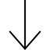

Цветочная лавка «Георгин» |
| Главная | О георгинах | Уход | Букеты | Прайс | Заказ | DOM_JS | Паспорт | Задача | ВШЭ | Википедия |
Раздел 1. Георгины |
Раздел 2. Уход за букетом |
Раздел 3. Доставка |

 Помпонные георгины — наш самый популярный сорт |
Георгин — многолетнее растение семейства астровых. Родина цветка — Мексика, а в Европу его привезли в конце XVIII века. Георгины цветут с июля до первых заморозков, поэтому осень — их главный сезон. Цветок бывает размером от 3 до 25 см и почти любого цвета — кроме синего. На фото — помпонные георгины: у них плотные круглые соцветия, похожие на шарики. Они долго стоят в вазе и хорошо держат форму в букете. |
Какие бывают георгины по форме цветка:
Цвета, которые есть в нашей лавке:
Чтобы георгины простояли дольше, следуйте простым правилам:
Мы доставляем букеты каждый день с 9:00 до 21:00.